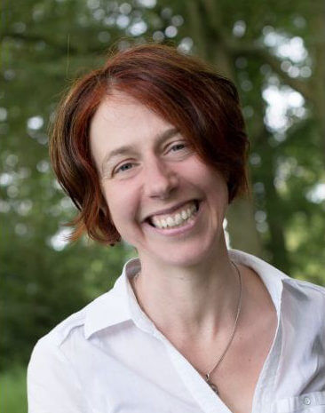
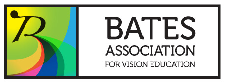

I grew up in Stirling, Scotland with mountains in sight and yellow broom growing in the garden. I had family and cats and a bike. I’d walk to school with my friends. We played in the lanes, climbed trees, stole plums. From the age of three I wore glasses and each year I would visit the optician and my prescription would increase and the lenses in my glasses would thicken slightly. At 18 I went to university in Cambridge, England to study physics. I liked its mathematical elegance and I wanted to understand – to get to the finest subatomic detail, to explore space and time. Still, each year my glasses would get stronger, my lenses thicker.
After graduating I moved to Montreal. My cousins there took me to an optometrist, Abraham Kirshner. This was a pivotal moment for me. “Your glasses are too strong”, he said. No-one had ever said that before. I was always just given stronger ones. But Kirshner was different. He gave me weaker lenses and some relaxation practices to do. My eyesight improved, I was astounded and set on my new path.
Back in Scotland I found my teacher, mentor and support Aileen Whiteford and through her I discovered more about Vision Education and the Bates Method. Through my sessions with her many doors have opened for me and she accompanied me while I explored my natural vision for the first time. She introduced me to Meir Schneider and the many hours that I spent working with the Handbook of Self-Healing he co-wrote with Dror Schneider and Maureen Larkin opened up my body to me bit by bit. Aileen also showed me the International Conference for Holistic Vision. The first time I went was in 1997 in Germany and finding a community of people working with eyesight in a holistic and healing way was another dramatic moment for me.
1997 was also the year that I started at Glasgow Caledonian University Vision Sciences department researching holistic vision therapy. I spent time immersed in the world of optometry and opticians, learning how it all worked. I taught optics and conducted a clinical trial of vision therapy for myopia. It was a time when I had great freedom to pursue my interests but also great restriction in how I could communicate my findings academically. With compromises I graduated in 2001. Throughout this time my vision had been shifting and I had been reducing the strength of my glasses for a time and then not wearing them at all. My vision was very changeable but I was completely in love with the process of change.
After some years working in other fields in rewarding jobs I yielded to the call vision work still had for me. I went back to studying but this time in a practical way at the Bates College of Vision Education with Aileen Whiteford and Margaret Montgomery. I went deeper into the work and learned how to teach it. Since 2007 I have been practising vision education with individual clients and in workshops.
As my vision changed so too did my body and my relationships with everything around me. I did Alexander technique, had cranio-sacral therapy, massage and counselling. I experienced lots of shifts in my body and in my perceptions. For me eyesight work is embodied work and I continue exploring and playing in different ways. I am grateful to all my Contact Improvisation teachers and fellow movers who have given me many tools for expression in relationship. I am also a student of Body-Mind Centring with Embody-Move and I love the open, creative, physical teaching space that provides.
As my vision changed so too did my body and my relationships with everything around me. I did Alexander technique, had cranio-sacral therapy, massage and counselling. I experienced lots of shifts in my body and in my perceptions. I love moving with yoga and dance and these have both been a big part of my personal vision journey. In 2011 I started learning Contact Improvisation and I found that the creativity, clarity, honesty and communication needed to move well in relationship mirrored my experiences with the Bates Method. When the dance worked, so did my eyesight. In 2015 I participated in the New Jammers facilitation training with @The GlasgowJam supported by Creative Scotland. My journey with movement has also led me to study Body-Mind Centring® with Embody-Move.
I am a member of the Bates Association for Vision Education

and the Association of Vision Educators.